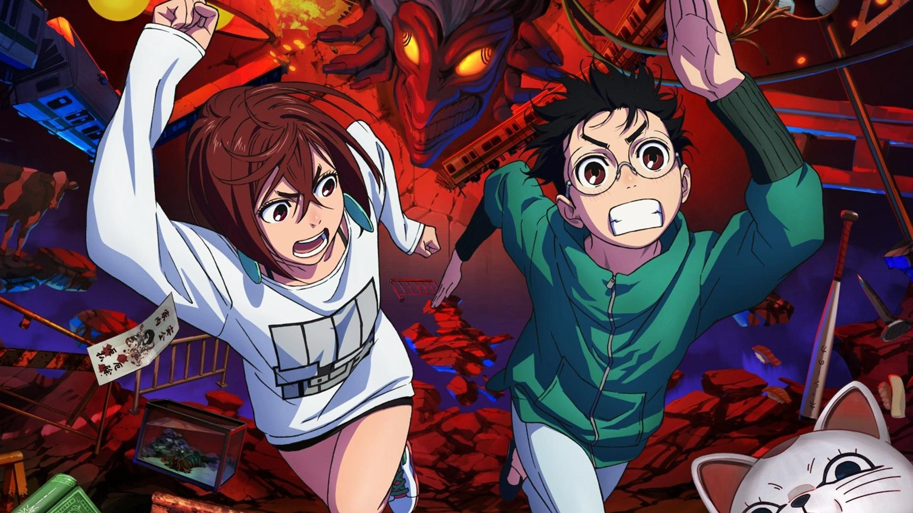
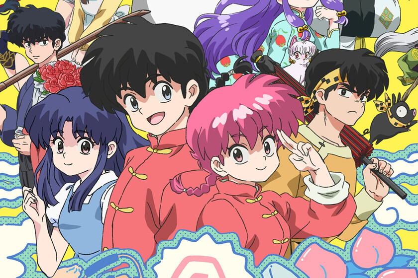

Un repaso de algunos animes que salieron este año.
ANIMES 2024
DANDADAN
Uno de los titulos mas esperados de este año.Los protagonistas se embarcan en una serie de investigaciones paranormales, enfrentando criaturas sobrenaturales en una mezcla de ciencia ficcion, terror, romance y comedia.
RANMA 1/2 (REMAKE)
Ranma ½ es una serie de anime de año 2024, producida por el estudio de animación MAPPA, basada en el manga homónimo de comedia romántica, acción y artes marciales de la mangaka Rumiko Takahashi, publicado entre 1987 y 1996. Siendo este anime una nueva adaptación mas apegada a la historia del manga y no un remake del anime de 1989.
DRAGON BALL DAIMA

Dragon Ball Daima es una serie de anime japonesa, precuela de Dragon Ball Super y secuela de Dragon Ball Z, la cual se estrenó en Japón el 11 de octubre de 2024. Está siendo desarrollada por Toei Animation y Shueisha, quienes se basan en los conceptos de historia y personajes creados por el autor original, Akira Toriyama.
BLUE LOCK (Temporada 2)

La segunda temporada de Blue Lock es una serie de anime basada en el manga del mismo nombre escrito por Muneyuki Kaneshiro e ilustrado por Yusuke Nomura. Fue anunciada tras el final de la primera temporada